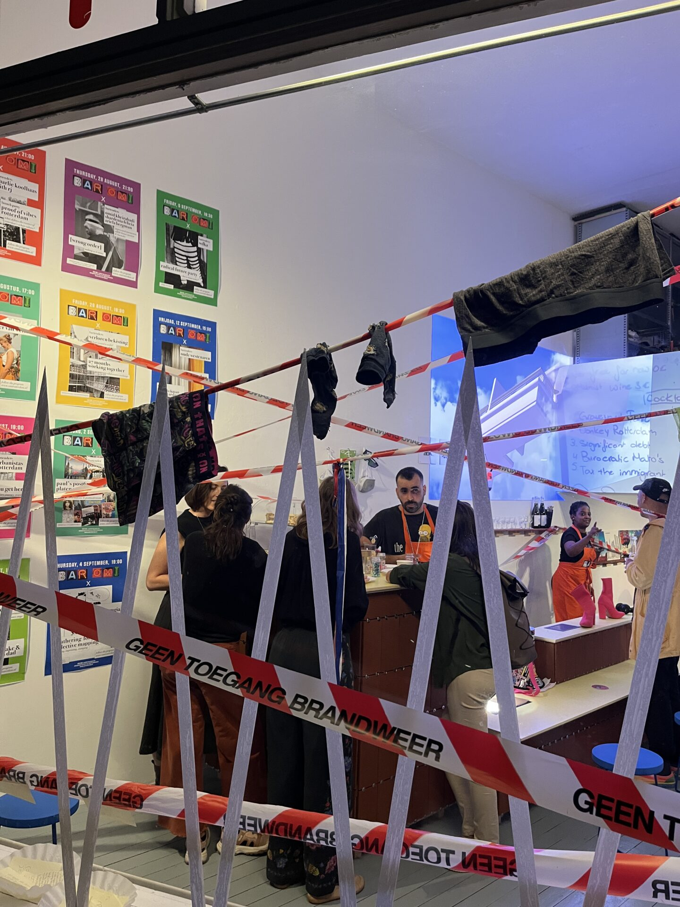
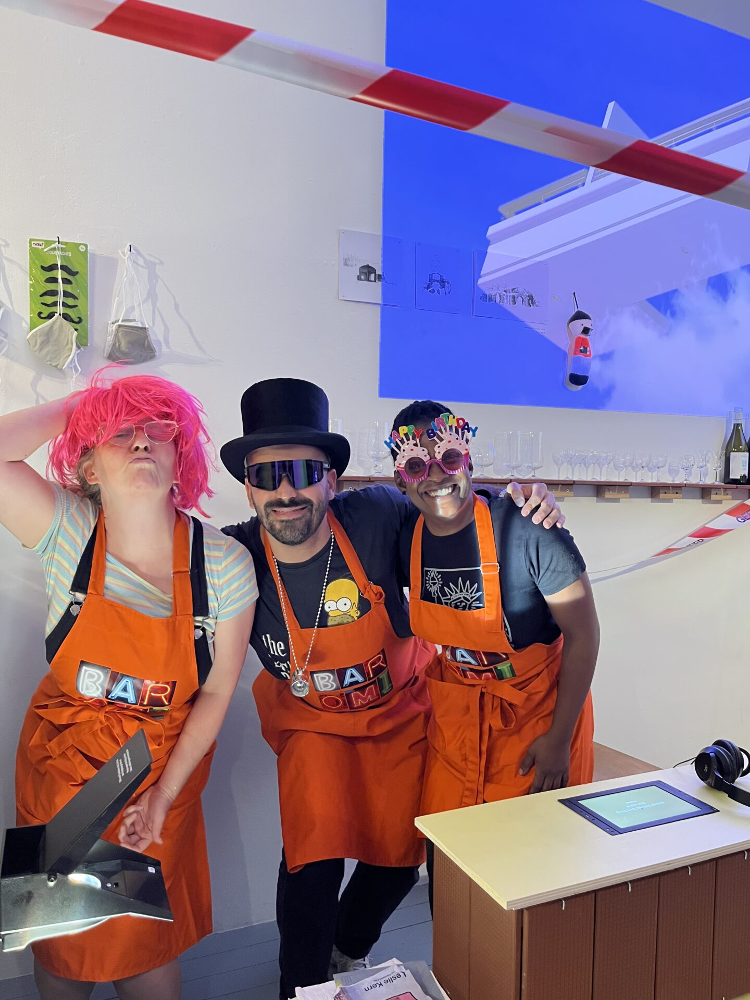
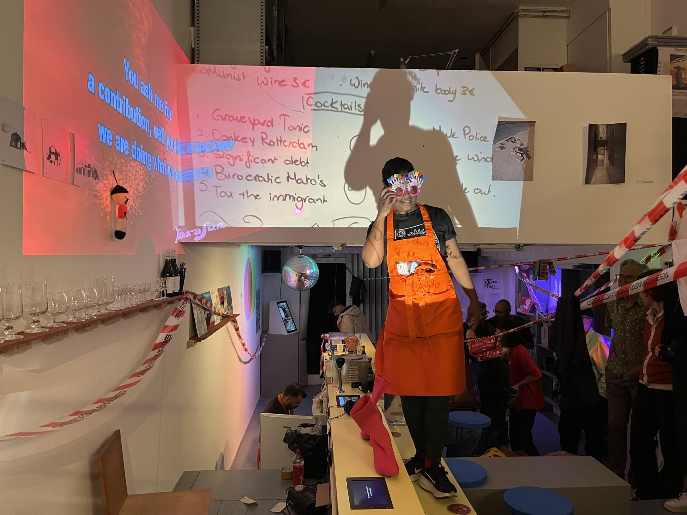
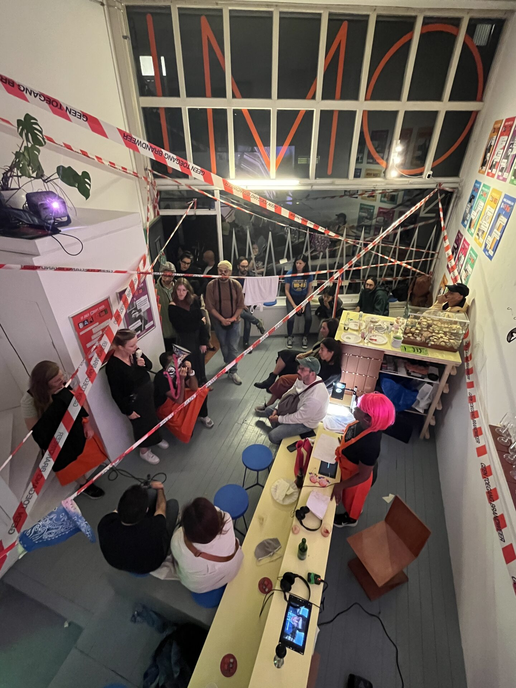

[wrong order]
[Wrong Order] was a one-night interactive performance at BAR OMI in Rotterdam, presented by Omid Kheirabadi together with Shardenia Felicia and Ariela Bergman, the same trio behind Carnisse in Flux. For one night, the bar itself became the stage: a shifting set where visitors were pulled into the performance, and every "wrong order" became a moment of connection or disruption.
The piece pushed back against the "smooth city" ideal, the promise of urban environments engineered for seamless efficiency, where everything works without friction and life runs on schedule. That polished surface hides the instability, struggle, and inequality underneath it; in reality, things break, people stumble, and systems fail, and it is in those moments of failure that real human connection, and sometimes resistance, can surface. Through the night, themes of housing affordability, entrapment in the money system, and the absurdity of debt, loans, and wages hummed beneath a program that also included revolutionary karaoke and a surprise one-night-only edible house auction to close the evening.



